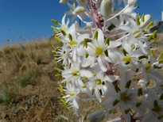

| PHRYGANA | Fauna | Flora | nouveautés | liste des espèces |
contact -
info - commentaires phrygana1 (at) gmail.com |
| Particularités crétoises | Galles et mines | ressources naturelles |
| Gymnoscelis rufifasciata (Haworth 1809) |
| 289 | Fauna | GEOMETRIDAE | Larentiinae | Gymnoscelis Mabille 1868 |
|
Gymnoscelis rufifasciata Melambes (Agios Giorgos) 17 novembre 2011 |
| en: Double-striped Pug |
| Envergure: 12 - 19 mm |
| Couleur de fonds gris pâle avec des accents brunâtres; lignes transversales un peu sinueues, brun foncé; ailes antérieures étroites, avec la costa droite et l'apex pointu; ligne postmédiane maquée par des traits noirs sur chaque veine, bordée d'une double bande pâle; frange gris brunâtre, tachée de gris pâle ou blanchâtre à l'extrémité des veines; souvent des taces de brun rougeâtre |
| Variable dans l'intensité des couleurs et des marques, la taille |
| Larve: presque toute l'année en Crète; entre mars et octobre en Belgique |
| Espèce bi - trivoltine |
| Période de vol: ==> Crète janvier février mars avril mai juin juillet août septembre octobre novembre décembre |
| ==> Belgique espèce bivoltine avec des périodes de vol entre avril et septembre |
| Altitudes: 0 - 1800 m |
| Statut: en Crète = indigène ---- en Belgique = indigène |
| Biotopes en Crète: phrygana, olivaies, garrigue, vergers, lisières, parcs, collines, pierriers |
| Distribution: Europe jusqu'en Chine |
| Note: l'adulte vient à la lumière. |
| Espèce également présente en Belgique (bivoltine - indigène), occupant des biotopes variés: parcs, jardins, lisières, bords de route, terrains vagues, hivernant dans la litière sous forme de chrysalide |
| Larve polyphage: fleurs et graines de nombreuses plantes herbacées ou arbustives dont: | ||
|
|
|
 |
| Vitex agnus-castus | Globularia alypum | Charybdis maritima |
|
|
|
|
| Ricinus communis | Mercurialis annua | |
|
Gymnoscelis rufifasciata Melambes (Agios Giorgos) 01 décembre 2010 |
| 23 janvier 2012 |
| © paul fontaine -- © Phrygana.eu 2007 -- 2013 |